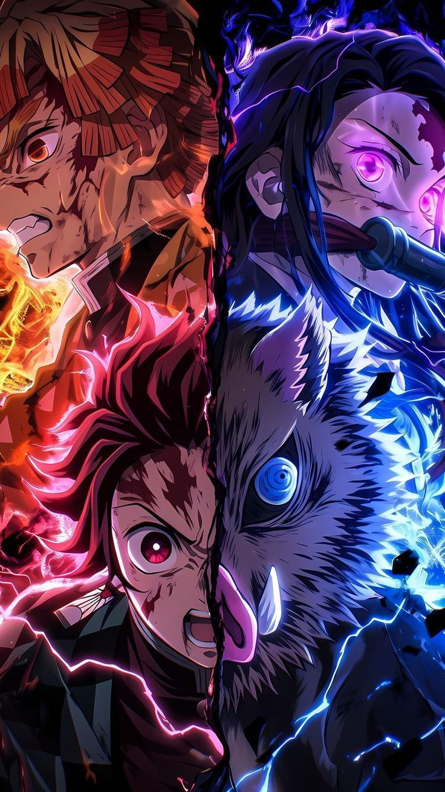
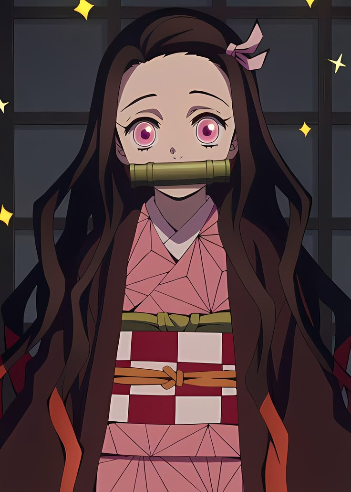
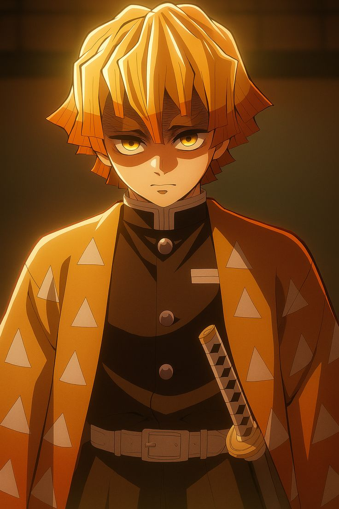

Guiado por la determinación y la esperanza de devolverle la humanidad a su hermana, Tanjiro se une al Cuerpo de Cazadores de Demonios, una organización secreta que ha combatido a estas criaturas durante siglos. Bajo la tutela de antiguos maestros, aprende la Respiración del Agua, una técnica de espada que le permite enfrentar a enemigos con habilidades sobrenaturales. Acompañado por sus leales amigos Zenitsu Agatsuma, un chico miedoso que libera un poder increíble cuando duerme, e Inosuke Hashibira, un guerrero salvaje que utiliza la Respiración de la Bestia, Tanjiro debe escalar en las filas de la organización. Su objetivo final es derrotar a Muzan Kibutsuji, el progenitor de todos los demonios y el responsable de su tragedia, mientras protege a una Nezuko que lucha por no sucumbir a su naturaleza demoníaca.

TANJIRO KAMADO

NEZUKO KAMADO

ZENITSU AGATSUMA

INOSUKE HASHIBIRA